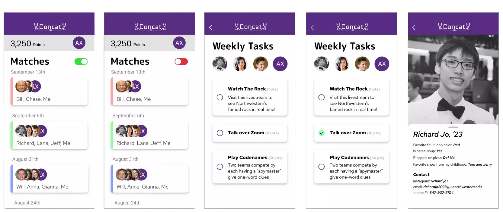
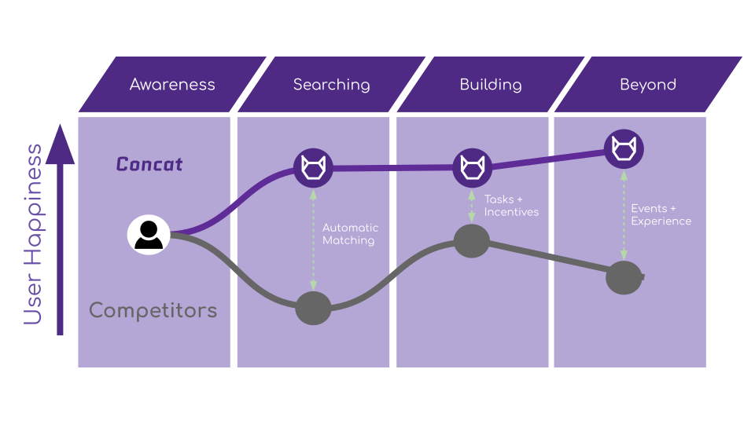

Copyright © 2026 Bill Yen.
Concat
Go Beyond Your Circles
About:
I created Concat with 3 other engineering students as a part of the 2020 McCormick Design-A-Thon, a virtual hackathon hosted by Northwestern that challenged students to come up with meaningful solutions to bring the campus together admist the COVID-19 pandamic. Within less than 48 hours, we developed a functional iOS app prototype with Figma, made a presentation, and filmed a 3 minute video detailing our design.
Problem:
Northwestern students who are not on campus lose the opportunity to organically meet new people outside of their bubbles without the anxiety of initiating contact with other students directly.

Solution:
Concat is a social media platform that allows students to meet new friend groups easily, seamlessly, and intentionallyMy Roles
As a design-oriented engineer, I focused on creating the graphics and branding for our concept while my teammates worked on building the Figma prototype. I also drew the animation in our final video and conducted numerous user interviews to gather inputs for our idea.
